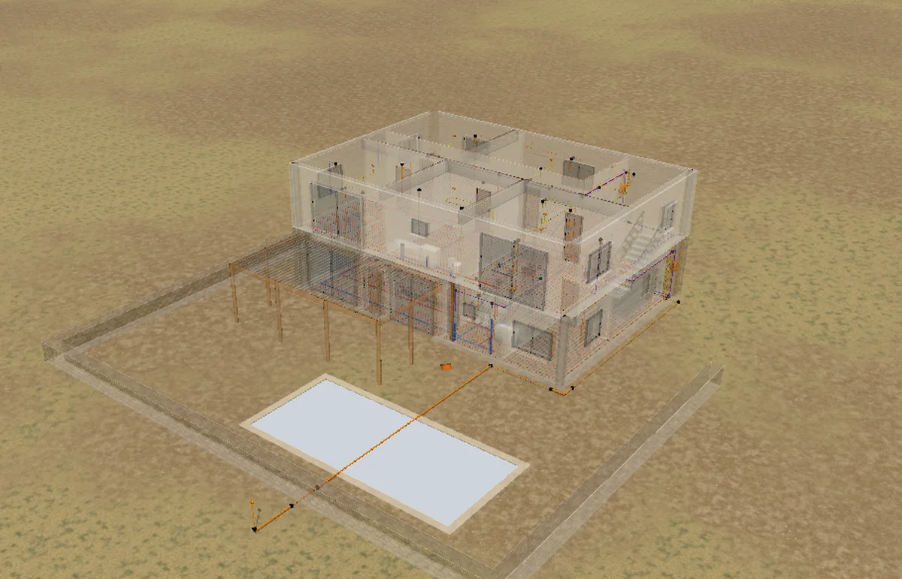
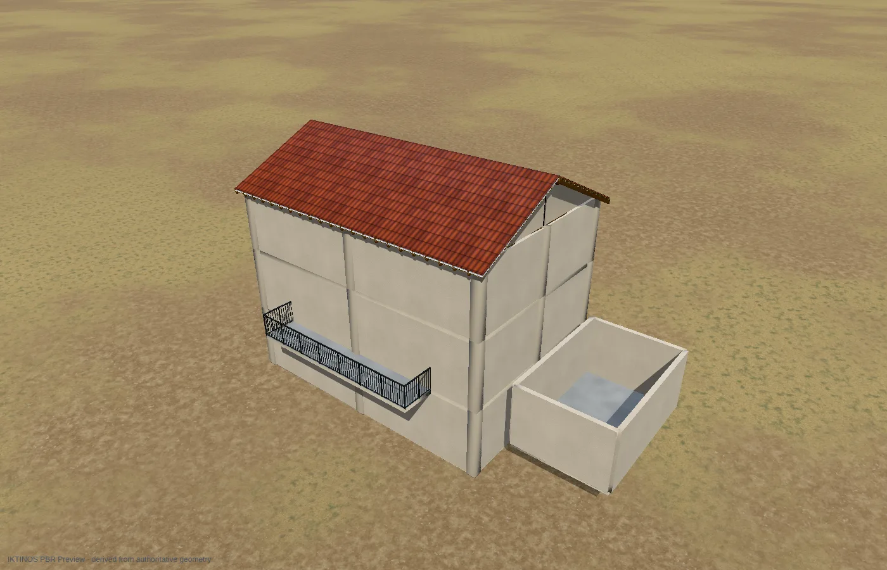
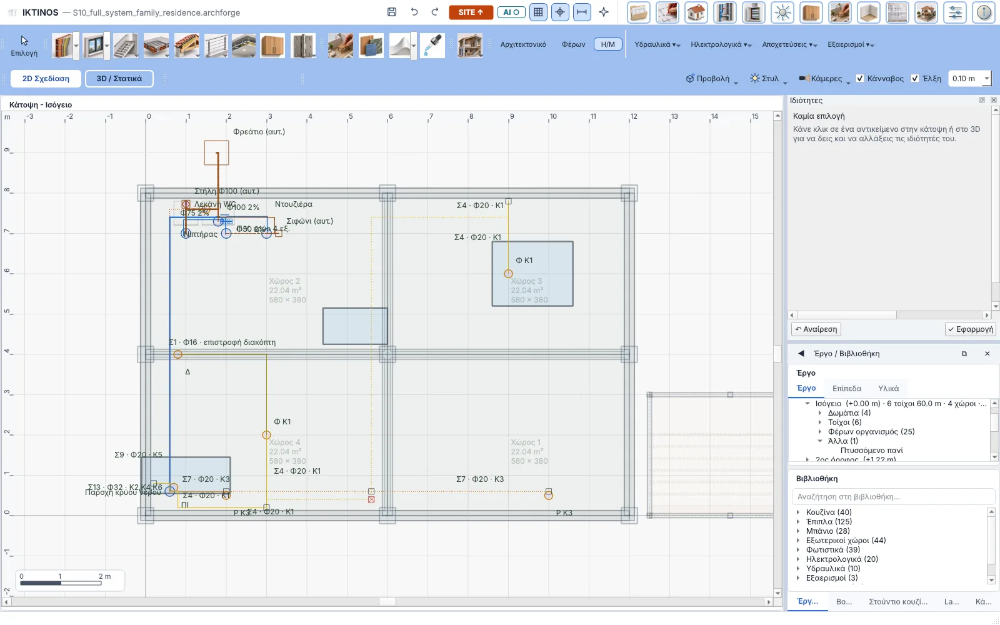
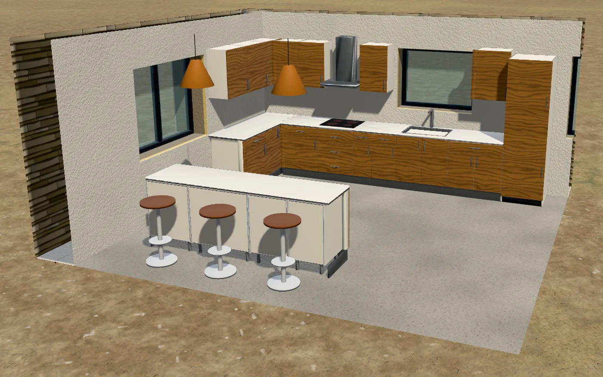
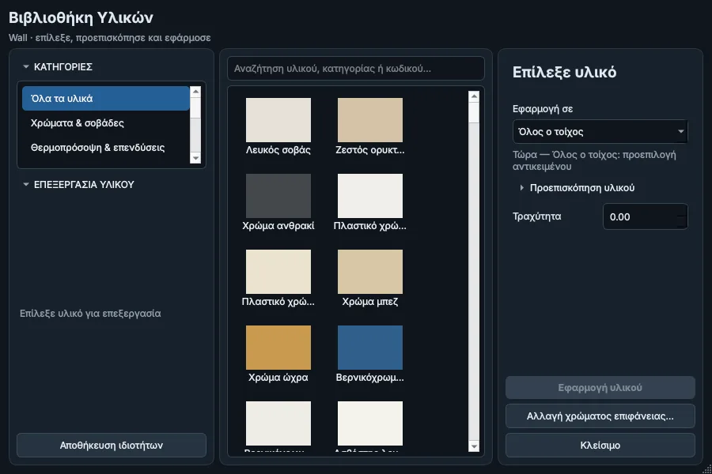
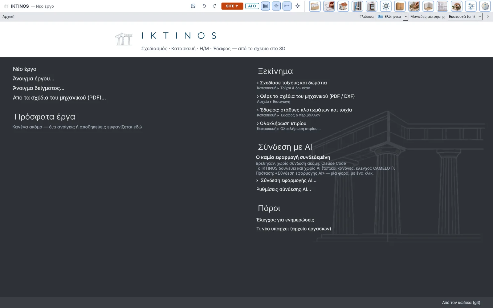

IKTINOS
IKTINOSOne line in an olive grove. One building, down to the last pipe.
FROM THE IKTINOS FILM · PAXOS, CC0From the floor plan to the formwork, the networks and the site.
IKTINOS keeps one model for the whole building. The plan, the 3D view, the structure to Eurocode 8, the MEP networks and the energy check all read the same drawing, and every change can be undone.
 3D · IKTINOS
3D · IKTINOS
The same check on every project
IKTINOS checks every project with the same rules and shows the problem on the plan. The values are after the “Analyse structure” command.
| Check | S12 villa | S13 dome | S14 offices |
|---|---|---|---|
| Joints ΣMRc / ΣMRb ≥ 1.30, including the top storey | 51 / 51 · min. 1.33 | 66 / 66 · min. 1.30 | 32 / 32 · min. 1.31 |
| Water supply: cold and hot in one network | yes | yes | yes |
| Save → close → reopen without loss | yes | yes | yes |
A house from scratch, in the order it is built
| Task | Where in the program | Rule · source | Stage |
|---|---|---|---|
| Stone exposed outside, plaster inside only; with or without plaster or insulation — the wall thickness follows. | Wall ▾ ▸ Wall type ▸ ＋ New build-up | λ per layer from TOTEE 20701-2 | Available |
| Chosen before drawing; the outline by clicking corners, inner walls in 13 cm brick without changing again. | Wall ▾ ▸ Wall type | — | Available |
| Entrance, inner doors, windows by clicking on the wall; frame material and glazing in sub-menus. | Construction ▸ Openings | glazing per TOTEE 20701-1 | Available |
| Slab, floors, ceilings and flat roof in one command and one undo. You choose, the Assistant helps; an AI connection is optional. | Project ▸ Complete building… | IKTINOS local rules | Available |
| Outer walls go up; two rooms, a balcony, a timber pergola. The roof moves to the top of the new storey. | Project ▸ Storeys ▸ Storey | — | Available |
| The stair follows the cursor before it is placed: type, risers and height show before the click. | Construction ▸ Stair·Ramp ▸ Stair | — | Available |
| A second Complete with a tiled roof; timber and roof insulation from Properties. | Project ▸ Complete building… | — | Available |
| A dome by clicking its centre or on top of other domes; V1–V8 frame from the dome's Properties, glass shell. | Construction ▸ Shell ▸ Bio-Spectre domes | class-I geodesic sphere (icosahedron) | Available |
A recording of the real program; the clock counts program time. Click a task = the video jumps there.
What it does by itself, what the engineer changes

| Task | Where in the program | Rule · source | Stage |
|---|---|---|---|
| Columns, beams and footings from the walls, in one command. | Construction ▸ Structural frame ▸ Compute frame | EN 1998-1 + Greek annex | Available |
| N, V, M per combination; utilisation bars for bending, shear, deflection, slenderness. | Column / beam Properties ▸ Details / Analysis | EN 1992-1-1 | Available |
| Bars per side, spacing in the critical zone; perimeter, double, “H”, diamond — the legs count in shear. | Member check ▸ Reinforcement | EN 1992-1-1 §9.2.2 | Available |
| The engineer changes sizes and bars; the check reruns at once, “Apply” in one undo. | Construction ▸ Structural frame ▸ Sections | — | Available |
| Capacity design of joints ΣMRc ≥ 1.30·ΣMRb, also at the top; formwork sheet as PDF. | Structural analysis… · right-click ▸ Formwork sheet (PDF) | EN 1998-1 §4.4.2.3 | Available |
| Extra bars, computedColumn: added bars; beam: top at supports, bottom in the span, with length. | Member check ▸ Reinforcement | EN 1992-1-1 | In progress |
| Joints and load analysis in the same windowAs sub-menus of “Member check”. | Member check | — | Next stage |
| Skewed axisColumn rotated by θ, local u / v axes, beams at an angle; the analysis already reads the rotation. | Column Properties | — | Next stage |
Water supply and drainage on the plan

| Task | Where in the program | Rule · source | Stage |
|---|---|---|---|
| FixturesWC, basin, shower, bath, sink, washers, electric or solar water heater. | Mechanical ▸ Water supply | — | Available |
| Supply in one networkCold and hot routed together, per storey, from the fixture positions. | Mechanical ▸ Water supply | layout pre-design — not an EN 806-3 hydraulic calculation | Available |
| Drainage with fallBranches Ø40 / 50 / 100 at 2 % towards the stack; stack Ø100 up to 4 l/s, else Ø125; floor drain, manhole. | Mechanical ▸ Drainage | EN 12056-2, system I | Available |
| Clashes and sleevesClick a row = the plan zooms to it with a red mark. | Lists ▸ Clashes / Sleeves | — | Available |
| Suggested fix per clashFor each kind of clash, a proposed fix. | Lists ▸ Clashes | — | Next stage |
| Explanation per connectionDiameter, fall and reason for each connection. | Mechanical ▸ Drainage | EN 12056-2 | Next stage |
Points, circuits, panels, supplies

| Task | Where in the program | Rule · source | Stage |
|---|---|---|---|
| Points and circuitsSockets, switches, dimmers, blind switch; circuit renumbering. | Electrical ▸ Power·panels | lighting 10 A / 1.5 mm² ≤ 10 points · sockets 16 A / 2.5 mm² ≤ 6 — HD 60364 | Available |
| Panels per storeyMain panel, storey sub-panels automatically, conduit map. | Electrical ▸ Power·panels | — | Available |
| Equipment suppliesBoiler, heat pump, pool plant room. | Electrical ▸ Supplies | pool: HD 60364-7-702 | Available |
| Low voltageRJ45, TV / SAT, ceiling Wi-Fi, rack. | Electrical ▸ Low voltage (data·TV) | — | Available |
| KNX control systemThe client's choice, conventional On/Off by default; with KNX switches become bus push buttons, DALI-2 luminaires on a gateway. | “Electrical board” tab ▸ Control system | KNX (EN 50090); bus limits for engineer review | Available |
| Analysis and costElectrical drawing and cost. | Electrical ▸ Electrical analysis | — | Available |
Intensity and direction, set in the building

| Task | Where in the program | Rule · source | Stage |
|---|---|---|---|
| LuminairesCeiling, recessed, spot, wall light, wall washer, hidden LED strip. | Electrical ▸ Lighting | — | Available |
| Intensity and colourLuminous flux (lm), temperature (K), beam, dimming. | Luminaire Properties | from the maker's data sheet only — no assumed values | Available |
| Spot aimTilt and bearing from the lighting window, not the fitting; a list of aims to copy. | Electrical ▸ Lighting ▸ Project lights | — | Available |
| Light per roomSet the project's lights per room, in 3D. | Electrical ▸ Lighting ▸ Project lights per room… | not a lighting design study | Available |
Underfloor, radiators or fan coils

| Task | Where in the program | Rule · source | Stage |
|---|---|---|---|
| Choose the systemUnderfloor, radiators or fan coils; source: boiler or heat pump. | Mechanical ▸ Heating ▸ Heating system | — | Available |
| In every room, automaticallyRadiators or fan coils in each room; fan coils in Cooling too. | Mechanical ▸ Heating | — | Available |
| UnderfloorLoop spacing, manifolds, loops per room; lengths from the geometry. | Mechanical ▸ Heating ▸ Underfloor loop spacing… | spacing set by the user | Available |
| DistributionTwo-pipe with branches or manifolds per storey. | Mechanical ▸ Heating ▸ Distribution | — | Available |
| Temperatures and indicative outputDesign temperatures per project, indicative output. | Mechanical ▸ Heating | indicative — not an EN 12831-1 heating study | Available |
| Sun and windSun hours and shading per window, local wind, balconies. | Drawings ▸ Sun and wind | — | Available |
Choices change, Properties alongside

| Task | Where in the program | Rule · source | Stage |
|---|---|---|---|
| Pick a room on the plan; the project does not change until “Apply”. | Kitchen·wardrobe ▸ Kitchen·bath ▸ Kitchen Studio 3D… | — | Available |
| Fronts, colours, worktop, hardware, splashback tile. | Studio | — | Available |
| The kitchen follows the room's windows; island with stools; applied in one undo. | Studio | — | Available |
| Bathroom StudioThe same flow for the bathroom. | Kitchen·wardrobe ▸ Kitchen·bath ▸ Bathroom Studio 3D… | — | Available |
| The kitchen as a groupAfter “Apply” it moves as one; “Explode” to work on each piece — furniture too. | Studio | — | Next stage |
Material from a photo, joints, laying pattern

| Task | Where in the program | Rule · source | Stage |
|---|---|---|---|
| Material libraryA small window beside the 3D: categories, search, whole wall or one face. | Library ▸ Materials ▸ Material on selection… | — | Available |
| Material from a photoStone, wood, tile from a JPG / PNG at real width and height; travels inside the project. | Edit material ▸ Image… | — | Available |
| JointsJoint width in mm and joint colour, tile size. | Edit material ▸ With pattern | — | Available |
| Laying patternGrid, half bond (brick), third bond (boards); 0° / 90°; rubble, ashlar, polygonal, flagstone. | Edit material ▸ Pattern · Row offset | — | Available |
| WoodBoards with grain or continuous grain (melamine). | Edit material ▸ Pattern | — | Available |
Plan and 3D together, insulation, existing and new

| Task | Where in the program | Rule · source | Stage |
|---|---|---|---|
| One button next to 2D / 3D: a change on the plan shows at once on the building. | “2D + 3D together” button | — | Available |
| Thermal insulation and waterproofing per category, thickness, m² from the drawing. | Energy ▸ Insulation | λ from TOTEE 20701-2 Table 2 | Available |
| Each element has a phase; existing ones are not picked for moving. | Project ▸ Phases (existing·demolition·new) | — | Available |
| Screed in InsulationA read-only row; quantities stay in Materials & works. | Energy ▸ Insulation | — | In progress |
Works, materials, amounts and total from the same drawing

| Task | Where in the program | Rule · source | Stage |
|---|---|---|---|
| Work take-offPer room, from the drawing. | Drawings ▸ Take-offs·prices ▸ Work take-off | — | Available |
| Materials per tradeFor ordering and quoting; priced materials list to Excel. | Drawings ▸ Take-offs·prices ▸ Materials per trade | — | Available |
| Prices and quoteUnit price set by the user, total, PDF with plans and quote. | Drawings ▸ Take-offs·prices ▸ Prices quote… | user's prices | Available |
Example table — HYPOTHETICAL amounts
| Work | Material | Quantity | Unit | € / unit | € |
|---|---|---|---|---|---|
| Stone masonry 52 cm | stone, mortar | 120 | m² | 95 | 11,400 |
| Interior plaster | lime-cement mortar | 310 | m² | 14 | 4,340 |
| Flat-roof insulation | XPS 10 cm | 95 | m² | 22 | 2,090 |
| Floor screed 6 cm | cement screed | 140 | m² | 12 | 1,680 |
| Drainage | PVC pipes Ø40–Ø100 | 48 | m | 18 | 864 |
| Total (hypothetical) | 20,374 | ||||
Quantities and prices in this example are hypothetical. In the program quantities come from the drawing and you set the prices.
One model for the whole building — in beta

| Task | Where in the program | Rule · source | Stage |
|---|---|---|---|
| IFC exchangeIFC export for engineers (BIM); IFC import with walls, openings, storeys. | Drawings ▸ Export ▸ IFC · Project ▸ Import ▸ IFC | IFC4 | Available |
| Engineer's DXF and PDFDXF plans per storey; an engineer's drawing (PDF / DXF) as underlay, walls from the underlay, survey DXF. | Drawings ▸ Export ▸ DXF · Project ▸ Import | DXF · PDF | Available |
The rules and how they are checked
| Standard | What it covers | How it is supported and checked |
|---|---|---|
| ΤΟΤΕΕ 20701-1 / -2 | material λ, element U, glazing | the TOTEE tables in the code, each value citing its table |
| ΚΕΝΑΚ | thermal adequacy, energy certificate | Energy ▸ Thermal adequacy / Energy certificate; compared with a real study |
| EN 1992-1-1 | bending, shear, deflection, stirrups | Member check, per combination |
| EN 1998-1 + ΕΘΠ | seismic, joint capacity design | the same check on every project (Quality gate table) |
| EN 12056-2 | drainage: discharge units, diameters, fall | each pipe cites its source |
| ΕΛΟΤ HD 60364 | circuits, pool (-7-702) | the program's circuit rules |
Pre-design: every result is checked and signed by a licensed engineer. Over 3,800 automated tests run on every change to the program.
Staged development of IKTINOS
| Stage | What it includes | |
|---|---|---|
| 01 | Beta — today Available | Everything marked “Available” in the tables: Windows for the office, Android for the site, Greek and English. |
| 02 | Engineers' trial In progress | Engineers work real projects and we compare with their studies; everything marked “In progress”. |
| 03 | Next tools Next stage | Everything marked “Next stage”, in the order users ask for. |
| 04 | Release Next stage | The whole package — architecture, structure, MEP, energy, site — at one competitive price. |
IKTINOS is in beta, under development. If you are interested in a trial, let us know — form below.
The project on site, on your phone
The IKTINOS construction-site app. The office sends the building read-only; the phone never changes the design, it sends observations.


Designed in Greece, for European projects
The trial release is the current development release. Use it alongside the software you already have and check every result before you submit it.
- Interface in English and Greek.
- 14 sample projects, or your own drawings in PDF / DXF.
- Windows for the office, Android for the site.